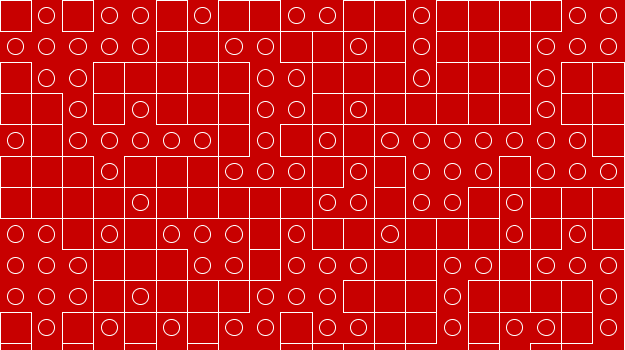

Opening Video: Miyamoto on SMB 1-1
interactive, adj.
…acting upon or influencing each other
A core issue in interactive work is how the viewer effects their experience. In non-interactive works, the viewer has no influence on the form of the work; what the viewer sees and hears is decided entirely when the work is created. In interactive works, the viewer makes choices that influence – or even contribute to – what they see and experience.
One of the key things to consider when designing or criticizing an interactive project is what options and choices are presented to – and withheld from – the user.
If you believe that communication is essential to art/design, then all mediums of art/design are arguably interactive to some extent. We tend to call a work interactive only when the the user’s actions and choices are an intentional, substantial consideration of the artist.
Javascript provides a flow control structure called a for loop. With loops, you can ask Javascript to execute a single block of code multiple times.
The basic syntax of a loop looks like this:
for ( initialExpression, condition, incrementExpression ) {
//code to repeat
}
When the for control structure is executed, Javascript follows these steps:
initialExpression is excuted once.condition is evaluated to true or falsetrue, continue. If false, exit the loop.incrementExpressionThe MDN Javascript guide also describes for statements.
The code in initialExpression, condition, and incrementExpression could potentially be any legal expression, but it is very common for a for loop to look like this:
for (var i = 0; i < 10; i++){
// repeated code
}
This code will execute 10 times, with i having a values of 0, 1, 2, 3, 4, 5, 6, 7, 8, and 9. After the last time the repeated code is run, i will be incremented to 10. Because 10 is not less than 10, the loop will exit.
Compare this code that doesn’t use a loop…
line( random(0, 400), random(0, 400), random(0, 400), random(0, 400));
line( random(0, 400), random(0, 400), random(0, 400), random(0, 400));
line( random(0, 400), random(0, 400), random(0, 400), random(0, 400));
line( random(0, 400), random(0, 400), random(0, 400), random(0, 400));
line( random(0, 400), random(0, 400), random(0, 400), random(0, 400));
line( random(0, 400), random(0, 400), random(0, 400), random(0, 400));
line( random(0, 400), random(0, 400), random(0, 400), random(0, 400));
line( random(0, 400), random(0, 400), random(0, 400), random(0, 400));
line( random(0, 400), random(0, 400), random(0, 400), random(0, 400));
line( random(0, 400), random(0, 400), random(0, 400), random(0, 400));
…to this code that does.
for (int n = 0; n < 10; n++) {
line( random(0, 400), random(0, 400), random(0, 400), random(0, 400));
}
These code snippets do the same thing: draw ten randomly placed lines. The version with the loop is shorter, clearer, and easier to maintain. With just ten lines, either approach could work. If we wanted to draw hundreds or thousands of lines, using a loop is the only practical choice.
When you use the a loop the same code is executed multiple times, but that code doesn’t have to do the same thing every time. By combining loops with variables and expressions, we can create complex effects.
You can use for and if statements inside the blocks of other for and if statements.

To be interactive, your program must be able to react to the user. In order to react to the user, it needs a way to sense what the user is doing. There are many types of sensors that can be used with computers. Computers can hear with microphones, and see with cameras. They can feel temperature, weight, wind-speed, light levels, magnetism, accelerations, gravity, and direction.
One of the most basic sensors used with computers is a switch. The computer keyboard is a collections of switches. Keyboards and mice, and now touch screens, are the most common ways we interact with PCs.
setup and drawWhen p5 runs your program, it first runs the commands you put in setup. It then runs the commands in draw. The draw function is run repeatedly. By default run is run 60 times every second. This can be changed with frameRate().
By changing what you draw each time draw is called, you can create animation. By changing what you draw in response to user input, you can create interaction.
mouseX and mouseYThe p5 library provides an easy way to work with the position of the computer mouse. The mouseX and mouseY variables are used to communicate the position of the cursor relative to your project’s canvas.
The values of mouseX and mouseY are updated every frame, before your draw function are called.
Lets try someting with mouseX, mouseY, and a loop.
mouseIsPressedThe mouseIsPressed variable is boolean, its value is either true or false. Processing updates this variable to let you know if the main mouse button is pressed.
You can create animation by displaying a series of drawings, each slightly different from the last.
In order to do this, you will often use a variable to keep track of where someting is, change that variable a little each time your draw, and then use that variable while drawing.
We now have the tools to create complex animations and interactions. Lets look at how we would draw a bouncing ball.
This weeks homework is a series of challenges to recreate drawings, animations, and interactions.
Begin by forking the assignment repo and cloning it to your computer. The template has a folder for each challenge. For each challenge try to reproduce the look and behavior as closely as possible. Write clear, well formatted code. Use good, descriptive names for variables, and use comments to explain your code.
The bonus challenge does not have a folder, you should create one on your own.
You will receive 0.5 points for recreating the core technical aspect of each challenge in your code. An additional 0.25 points per challenge will be awarded for well written, well commented code. Partial credit will be awarded for partially completed challenges.
Commit your work often, but do not sync your work until Friday.